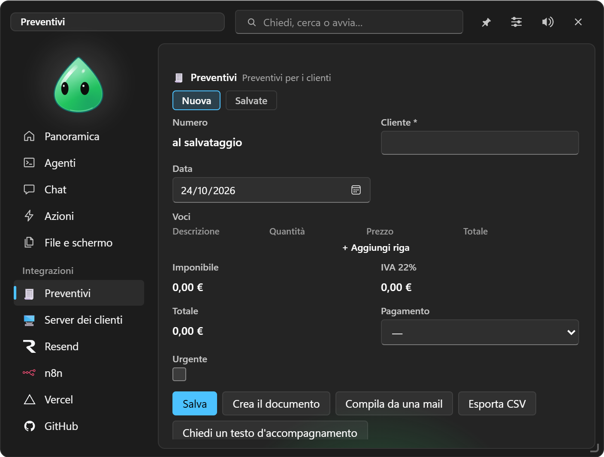
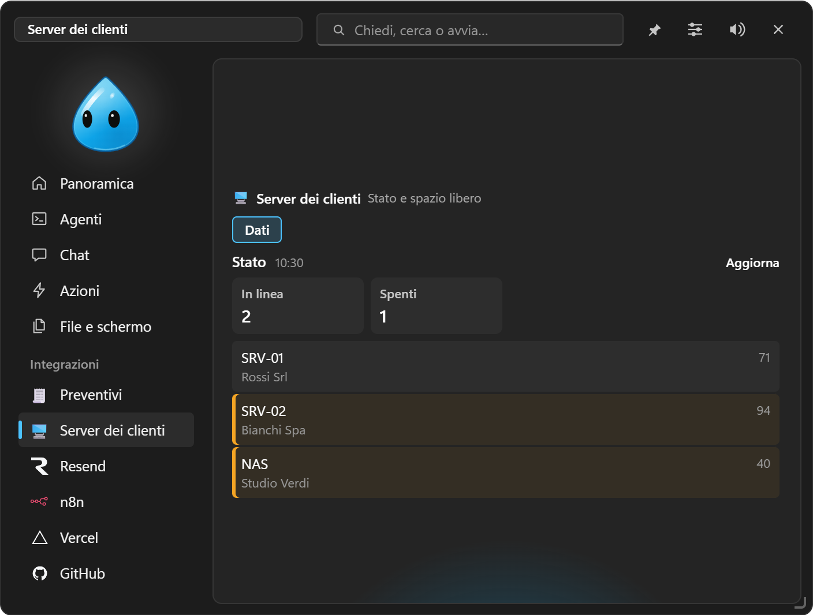

Integrazioni personali
Chiedi alla chat la funzione che ti serve — un modulo, un cruscotto, un collegamento a un'API — e diventa una voce dell'isola. Senza scrivere codice.
#Crearne una
Scrivi in chat quello che ti serve, per esempio:
- «crea un'integrazione per i preventivi, con cliente, righe di prodotti con quantità e prezzo, IVA al 22 % e totale, che faccia il PDF»;
- «voglio un registro degli interventi con cliente, data, ore, tipo e note, e il totale delle ore del mese»;
- «fammi un cruscotto che legge ogni 10 minuti lo stato dei miei server dall'API di Uptime Kuma e mi avvisa se uno è giù»;
- «un pulsante che manda il modulo al mio webhook di n8n».
La chat propone campi, calcoli e azioni utili, ti chiede quello che non è chiaro e ti mostra l'anteprima della descrizione con Consenti / Nega. Confermando, l'integrazione compare nel menu dell'isola con la sua icona. Per cambiarla basta chiedere («aggiungi un campo sconto», «fai il totale in grassetto»): stessa anteprima, stessa conferma.
Importante: un'integrazione personale è una descrizione, mai codice: le sue azioni sono un elenco fisso e sicuro.

#Cosa può avere
#Campi
Testo, testo lungo, numero, importo, data, casella, scelta e scelta multipla, email, telefono, link, file (dal Vassoio), tabella di righe (con colonne anche calcolate), calcolato (una formula), numerazione automatica (es. N-2026-0001), collegamento a un'altra integrazione (es. il preventivo che sceglie un cliente dalle schede «Clienti»).
- Compare solo se: un campo visibile solo quando una formula è vera (es. «IBAN» solo se pagamento = Bonifico).
- Totale nell'elenco: sommato o contato nella lista delle schede.
#Formule
Un linguaggio semplice, in italiano o in inglese: + - * / %, confronti, e / o / non, se(condizione; sì; no), somma(quantita*prezzo) sulle righe, media, conta, arrotonda, min, max, date (oggi(), giorni(da; a), piugiorni(data; 30), anno, mese), testo (maiuscolo, unisci, contiene, lunghezza). Numeri all'italiana (0,22). Mai codice eseguito.
#Modello del documento
Un documento in Markdown con i {{campi}}, le righe ripetute ({{#righe}} … {{/righe}}) e la data. Documento lo produce in HTML stampabile (da lì «Stampa → PDF») o in Markdown, nel Vassoio.
#Azioni (i pulsanti)
| Azione | Cosa fa |
|---|---|
| Salva | Salva la scheda (elenco con ricerca, apri, duplica, elimina) |
| Documento | Il modello compilato, nel Vassoio |
| Copia | Il testo negli appunti |
| Chiedi all'AI | Una domanda alla chat con i campi |
| Compila con l'AI | Incolli una mail o un testo e l'AI riempie i campi |
| Link | Apre un indirizzo con i campi |
| Azione rapida | Esegue una tua azione |
| Notion | Aggiunge la scheda a un database |
| Esporta CSV | Tutte le schede, per Excel |
| Chiamata a un servizio | GET/POST/PUT/PATCH/DELETE all'API di un tuo servizio, con i campi nel corpo; la risposta può riempire i campi e comparire in un messaggio |
| Compito | Avvia un compito con i campi nell'obiettivo |
| Avviso | Un avviso nell'isola |
| Sequenza | Più azioni in fila (es. salva, poi chiama il servizio, poi fai il documento) |
#Fonti di dati: i cruscotti
Una fonte legge un servizio ogni N minuti (o quando apri la scheda) e mostra valori ed elenchi. Un avviso è una formula su ogni elemento: quando è vera, l'isola ti avvisa, una volta sola per elemento, e la prima riga va nella Panoramica. Un'integrazione può essere anche solo un cruscotto, senza modulo.

#Chiavi
Le chiavi e i token dei servizi si scrivono come {{secret:nome}} e si inseriscono in Impostazioni → Integrazioni → Create da te: vanno in Gestione credenziali, le legge solo EasyIsland al momento della chiamata e né l'isola né la chat le vedono mai.
#Dalla chat e dai compiti
La chat e i compiti possono leggere le schede, aggiungerne (con Consenti / Nega), leggere le fonti e chiamare le azioni delle tue integrazioni: «quanti preventivi ho fatto a ottobre?», «registra un intervento di 2 ore per Rossi», «controlla i server e dimmi se c'è qualcosa».
#Gestirle
Impostazioni → Integrazioni → Create da te: accendi o spegni nel menu, modifica la descrizione JSON, inserisci le chiavi, elimina. I file stanno in %APPDATA%\EasyIsland\integrazioni (descrizione e schede, leggibili).
#Limiti, di proposito
- Niente codice: un'azione fa solo quello che il suo tipo prevede.
- Le chiamate vanno solo ai servizi scritti nella descrizione che hai approvato.
- Nessun dato «spinto» dai servizi (webhook in arrivo), perché servirebbe una porta aperta sul PC: si usa una fonte letta ogni N minuti.
- Funziona con il PC acceso.